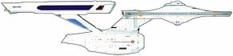
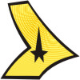
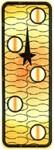

Flotta Stellare - Classe Constitution |
  |
Dati di una nave tipica di questa classe:
Cantieri di produzione: Stazione orbitale di San Francisco,
Terra, entrata in servizio nel
2245
Capacità: 430 membri di equipaggio.
Dimensioni: 288,6 metri di lunghezza, 127,1 metri di larghezza, 72,6
metri di altezza, 23 ponti.
Stazza: 190.000 tonnellate.
Sistema informatico: computer duotronici.
Teletrasporto: 4 per forme di vita (6 forme di vita contemporanee
ciascuno), 6 per le merci e 4 di emergenza con un raggio massimo di 16.000 Km.
Sensori: 15 anni luce di raggio massimo alla risoluzione minima.
Motori: reattore materia-antimateria a cristalli di dilitio.
Velocità: Warp 6 con un massimo di warp 8; massimo 0,75c per i motori a
impulso.
Armi: Phaser tipo VII, un
tubo di lancio siluri fotonici.
 USS
Constellation NCC-1017 Comandata dal commodoro Mattew Decker,
distrutta nel 2267 dal
dispositivo di origini ignote noto come «macchina del giudizio universale». USS
Constellation NCC-1017 Comandata dal commodoro Mattew Decker,
distrutta nel 2267 dal
dispositivo di origini ignote noto come «macchina del giudizio universale». |
The Doomsday Machine | Il modellino della Constellation era un modellino AMT dell'Enterprise opportunamente bruciato e danneggiato. Anche il numero di scafo è quindi un anagramma di quello dell'Enterprise. |
| USS Constitution NCC-1700 | Court Martial | |
| USS Defiant NCC-1764 Dispersa nel 2268 in un'interfase spaziale presso lo spazio tholiano. Gli effetti dell'interfase hanno portato la nave nel 2155 dell'Universo dello Specchio. | In A Mirror, Darkly, The Tholian Web | |
| USS Eagle NCC-956 Una delle navi che avrebbero preso parte alla «Operation: Retrieve» per liberare il capitano Kirk. | Star Trek VI | L'aquila è uno dei simboli degli Stati Uniti ed è il nome del modulo lunare dell'Apollo 11. |
| USS Endeavour NCC-1895 | Endeavour è il nome della nave ammiraglia dell'esploratore Britannico James Cook e di uno degli space shuttle della NASA. | |
| USS Enterprise NCC-1701 Comandata da: capitano Robert April, capitano Christopher Pike, capitano James Kirk. | Serie Classica | Tutte queste navi si chiamavano Enterprise... |
| USS Enterprise NCC-1701 (refit) Dopo il termine della missione quinquennale di James Kirk e un lungo refit, è stata comandata da: capitano Williard Decker, ammiraglio James Kirk, capitano Spock. Rubata dall'attracco spaziale terrestre durante la crisi Genesis, è stata distrutta dall'ammiraglio Kirk in orbita attorno a Genesis. | Star Trek I Star Trek II, Star Trek III | |
| USS Enterprise NCC-1701-A Comandata dal capitano James Kirk. | Star Trek IV Star Trek V Star Trek VI | |
| USS Essex NCC-1697 | La Essex era una cannoniera fluviale della Guerra di Secessione,
che si distinse a Vicksburg e a Forte Henry. Essex è una contea dell'Inghilterra sud-orientale, a nord di Londra. |
|
| USS Excalibur NCC-1664 Comandata dal capitano Harris, è stata distrutta durante il test del computer M5. | The Ultimate Computer | Excalibur è il nome della spada di Re Artù. |
| USS Exeter NCC-1672 Comandata dal capitano Ronald Tracey, abbandonata in orbita attorno a Omega IV. | The Omega Glory | Exeter è una città inglese del Devonshire, sulle sponde del fiume Exe;
di origine celtica, occupata poi dai Romani, ha sempre avuto un ruolo
importante nella storia inglese. Attualmente è la sede di un importante
centro universitario. Exeter era una delle tre navi inglesi (le altre due erano la Achilles e la Ajax) che affondarono la corazzata tascabile tedesca Graf Spee al largo del Rio della Plata (Uruguay) nella Seconda Guerra Mondiale. |
| USS Farragut NCC-1647 Comandata dal capitano Garrovich. | Obsession | David Glasgow Farragut (1801-1870) è stato un eroe navale americano che
ha combattuto durante la guerra civile famoso per il suo motto «Damn the
torpedoes, full speed ahead!» pronunciato dalla coffa della sua fregata non
corazzata, la Hartford, appena dopo l'esplosione della Tecumseh
su di una mina durante la battaglia di Mobile Bay. Farragut fu il primo
ufficiale nominato ammiraglio dalla marina degli Stati Uniti. Il numero di registro della nave è un 47. |
| USS Hood NCC-1703 | The Ultimate Computer | La HMS Hood della Royal Navy deve il suo nome alla famiglia Hood,
che ha dato alla marina britannica quattro famosi ammiragli: Lord Hood, Lord
Bridport, Sam Hood e Horace Hood, che ha combattuto la Battaglia dello
Jutland durante la Prima Guerra Mondiale. La HMS Hood, un
incrociatore corazzato, varata nel 1918, era la nave da guerra più lunga del
mondo (262 metri) armata con otto cannoni da 381 mm e capace di raggiungere
32 nodi. Dopo la fine della Prima Guerra Mondiale è stata impegnata in una
crociera intorno al mondo per fare sfoggio della potenza della Royal Navy in
tutte le colonie e i paesi alleati dell'Impero. Nel Maggio del 1941 la
Hood i la Prince of Wales ingaggarono la Bismark e la
Hood ne fu la sua prima vittima. John B. Hood era un generale Confederato che ha combattuto la Guerra Civile Americana. |
| USS Intrepid NCC-1631 Equipaggio vulcaniano, distrutta nel 2267 da una forma di vita monocellulare presso il sistema Gamma 7A. | The Immunity Syndrome | |
| USS Lexington NCC-1709 Comandata dal commodoro Robert Wesley. | The Ultimate Computer | Concord e Lexington sono i villaggi che nel 1775 furono il teatro delle
prime scaramucce che sfociarono in seguito nella Rivoluzione Americana. La Lexington era una cannoniera fluviale unionista che si è distinta nelle battaglie di Forte Henry e Pittsburg landing. La portaerei della marina americana Lexington ha combattuto molte battaglie nel Pacifico durante la Seconda Guerra Mondiale. |
| USS Potemkin NCC-1657 | The Ultimate Computer, Turnabout Intruder | Grigory Aleksandrovich Potemkin (1739-1791) era un militare e un uomo politico russo nel periodo del regno di Caterina II che prese parte al colpo di stato che portò al trono la medesima. |
| USS Republic NCC-1371 Nave su cui servirono insieme James Kirk e Benjamin Finney all'inizio della loro carriera nella Flotta. Dopo decenni di servizio, la nave è diventata una nave scuola che raramente esce dal sistema solare. | Court Martial, Valiant | |
| USS Yorktown NCC-1717 Ricommissionata come Enterprise 1701-A dopo un refit. | Obsession | La portaerei Yorktown ha combattuto la Seconda Guerra Mondiale nel Pacifico. |